AgroSatCopilot
Copiloto conversacional para cuantificar superficies de cultivo por satelite
A conversational copilot for satellite-based crop area quantification
MNA · Proyecto IntegradorIntegrator Project · Tec de Monterrey · 2026
Carlos Isaac Ávila · Carlos Aaron Bocanegra · Arthur Jafed Zizumbo
SponsorSponsor: Dr. Gerardo Jesús Camacho
Recorrido de 30 minutos
A 30-minute tour
Agenda
Agenda
1. NegocioBusiness
El problema, el impacto economico y la metrica correcta.
The problem, the economic impact and the right metric.
2. Datos y EDAData & EDA
Por que la senal temporal manda; AlphaEarth, PASTIS.
Why the temporal signal rules; AlphaEarth, PASTIS.
3. ModeladoModeling
De baselines a 6 arquitecturas a 4 ensambles.
From baselines to 6 architectures to 4 ensembles.
4. Modelo finalFinal model
Voting-3: el campeon y su lectura por clase.
Voting-3: the champion and its per-class reading.
5. Copiloto y appCopilot & app
Be My Eyes, 10 herramientas, Spatial-RAG, frontend.
Be My Eyes, 10 tools, Spatial-RAG, frontend.
6. Transfer y futuroTransfer & future
Multi-region, DE4, MLOps, H100, aprendizajes.
Multi-region, DE4, MLOps, H100, lessons.
1 · Contexto de negocioBusiness context
El problema de negocio
The business problem
Inspeccion fisica
Physical inspection
~20 inspectores · 15 dias para 10,000 ha ≈ $600,000 MXN; lenta y no escala.
~20 inspectors · 15 days for 10,000 ha ≈ $600,000 MXN; slow and does not scale.
Sentinel-2
Cobertura gratuita y continua, pero convertirla en mapas fiables es un problema de ML dificil.
Free, continuous coverage, but turning it into reliable maps is a hard ML problem.
Oportunidad
Opportunity
Mismo territorio en minutos, costo marginal <$100, inventario mensual.
Same territory in minutes, marginal cost <$100, monthly inventory.
Aseguradoras, gobiernos y cooperativas necesitan inventarios de cultivo para subsidios, seguros y prevision de cosecha.
Insurers, governments and cooperatives need crop inventories for subsidies, insurance and harvest forecasting.
1 · Caso de negocioBusiness case
Beneficio e impacto
Benefit and impact
>1500%
ROI ano 1 (cliente 50,000 ha)
Year-1 ROI (50,000 ha client)
$115
USD/mes operativo (scale-to-zero)
USD/mo operating (scale-to-zero)
0.04 s
por inferencia a parcela
per parcel inference
Decisiones informadas
Informed decisions
Aseguradoras y gobiernos actualizan inventarios mensualmente, no una vez al ano: mejores subsidios, seguros y prevision.
Insurers and governments refresh inventories monthly, not yearly: better subsidies, insurance and forecasting.
Nuevo canal SaaS
New SaaS channel
El copiloto abre analisis fenologico por voz/texto a agronomos sin experiencia en teledeteccion. Apache 2.0.
The copilot opens phenological analysis by voice/text to agronomists with no remote-sensing expertise. Apache 2.0.
2 · Datos y EDA
2 · Data & EDA
Metodología CRISP-ML(Q)
CRISP-ML(Q) methodology
Un marco de extremo a extremo, con garantía de calidad en cada fase.
End-to-end framework, with quality assurance at every phase.
CRISP-ML(Q) — lo ejecutado
CRISP-ML(Q) — what we executed
| Fase | Phase |
Ejecutado | Executed |
| Business Understanding |
Costo-beneficio; métrica macro-F1; éxito = 8 clases separables. |
Cost-benefit; macro-F1 metric; success = 8 separable classes. |
| Data Understanding |
PASTIS-R + BreizhCrops; señal temporal; desbalance severo. |
PASTIS-R + BreizhCrops; temporal signal; severe imbalance. |
| Data Preparation |
Índices, features temporales (FFT/fenología), AlphaEarth 64-dim, CV espacial. |
Indices, temporal features (FFT/phenology), AlphaEarth 64-dim, spatial CV. |
| Modeling |
Baseline RF/XGB → segmentación → ensambles → transfer. |
RF/XGB baseline → segmentation → ensembles → transfer. |
| Evaluation |
mIoU + F1 fino/coarse, cardinalidad, ablaciones. |
mIoU + fine/coarse F1, cardinality, ablations. |
| Deployment |
Cloud Run scale-to-zero + H100 spot; copiloto SSE; DVC+MLflow. |
Cloud Run scale-to-zero + H100 spot; SSE copilot; DVC+MLflow. |
Dataset PASTIS-R
PASTIS-R dataset
2433
imágenes Sentinel-2 multi-temporales
multi-temporal Sentinel-2 images
128×128
píxeles por parche
pixels per patch
18
cultivos etiquetados
labeled crops
- Francia metropolitana; folds espacialmente disjuntos (anti-fuga).
- Metropolitan France; spatially disjoint folds (anti-leakage).
- Etiquetas validadas por agricultor.
- Farmer-validated labels.
EDA · Hallazgo 1
EDA · Finding 1
La señal temporal manda
The temporal signal rules
- La curva NDVI a lo largo del año separa cultivos; una sola foto no.
- The year-long NDVI curve separates crops; a single snapshot does not.
- Maíz de verano vs cereales de invierno: calendarios distintos → se separan.
- Summer maize vs winter cereals: distinct calendars → they separate.
- Variedades de cereal de invierno con calendario similar se confunden, incluso con deep learning.
- Winter-cereal varieties with similar calendars confuse the model, even with deep learning.
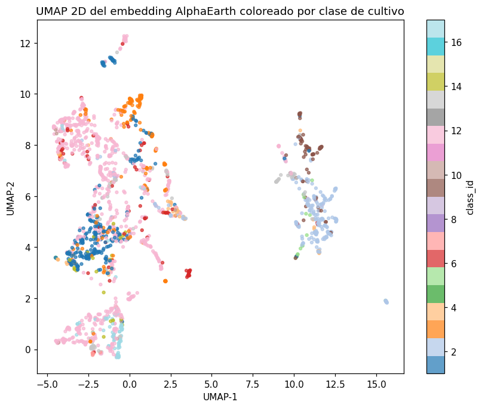
UMAP de embeddings AlphaEarth.
UMAP of AlphaEarth embeddings.
EDA · Hallazgo 2
EDA · Finding 2
Desbalance severo de clases
Severe class imbalance
- Meadow: ~30-45% de las parcelas.
- Meadow: ~30-45% of parcels.
- Colza, sorgo, orchard: <1% cada uno.
- Rapeseed, sorghum, orchard: <1% each.
- Por eso macro-F1, no accuracy.
- That is why macro-F1, not accuracy.
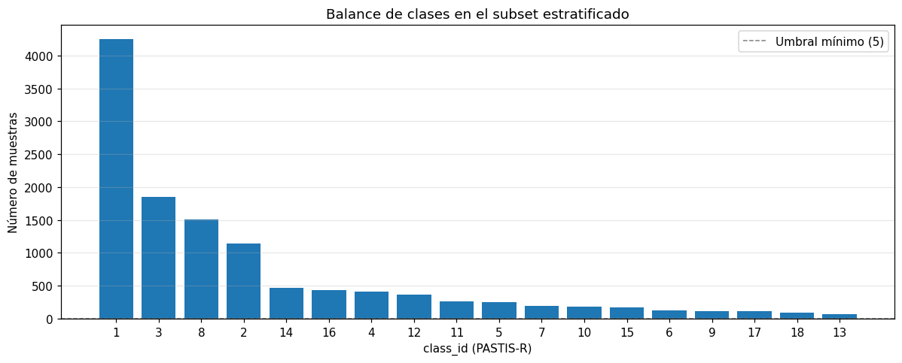
Distribución de parcelas por clase.
Parcel distribution per class.
EDA · Hallazgo 3
EDA · Finding 3
Los errores no se agrupan geográficamente
Errors do not cluster geographically
- El problema está en las clases difíciles, no en zonas mal cubiertas.
- The problem is in the hard classes, not in poorly covered areas.
- Implicación: más datos de una región no lo arregla.
- Implication: more data from one region will not fix it.
- Hay que atacar la separabilidad, no el muestreo.
- We must attack separability, not sampling.
¿Por qué F1-macro?
Why F1-macro?
Accuracy engaña
Accuracy misleads
Con desbalance, predecir siempre la clase mayoritaria infla la accuracy.
Under imbalance, always predicting the majority class inflates accuracy.
Macro-F1 pondera igual
Macro-F1 weights equally
Raros y comunes pesan lo mismo → alineado al negocio. Un seguro de colza importa aunque colza sea el 1%.
Rare and common classes weigh the same → business-aligned. Rapeseed insurance matters even if rapeseed is 1%.
AlphaEarth Foundations
AlphaEarth Foundations
64-dim
embedding anual
annual embedding
CC-BY-4.0
GEE gratis, global
free GEE, global
- NO se entrena un FM propio.
- No in-house FM is trained.
- Resume el año de forma decorrelacionada y de baja latencia.
- Summarizes the year in a decorrelated, low-latency way.
Preprocesamiento
Preprocessing
Índices espectrales
Spectral indices
NDVI, NDWI, EVI, MSAVI2, NDRE…
Features temporales
Temporal features
Armónicos FFT; fenología: inicio de verdor, pico, senescencia.
FFT harmonics; phenology: green-up, peak, senescence.
AlphaEarth 64-dim
AlphaEarth 64-dim
Transformaciones Yeo-Johnson para corregir sesgo.
Yeo-Johnson transforms to correct skew.
CV espacial — anti-fuga
Spatial CV — anti-leakage
- H3 res 5 + KMeans + buffer de 1 km entre folds.
- H3 res 5 + KMeans + 1 km buffer between folds.
- Agregación píxel → parcela.
- Pixel → parcel aggregation.
- El harness aborta si detecta solapamiento geográfico entre folds.
- The harness aborts if it detects geographic overlap between folds.
3 · Modelado
3 · Modeling
De baseline a ensamble
From baseline to ensemble
Baseline tabular → 6 arquitecturas de segmentación → 4 ensambles.
Tabular baseline → 6 segmentation architectures → 4 ensembles.
Ensamble vs clasificación clásica
Ensemble vs classic classification
Voting
Promedio de probabilidades decorrelacionadas.
Average of decorrelated probabilities.
Bagging
XGB + AlphaEarth sobre muestras bootstrap.
XGB + AlphaEarth over bootstrap samples.
Stacking
Meta-modelo árbitro por clase.
Per-class arbiter meta-model.
Blending
Pesos optimizados con Optuna.
Weights optimized with Optuna.
Baseline tabular: RF + XGBoost
Tabular baseline: RF + XGBoost
- Sobre AlphaEarth 64-dim + índices.
- Over AlphaEarth 64-dim + indices.
- F1 ~ 0.59 (XGBoost-AlphaEarth = 0.5913).
- F1 ~ 0.59 (XGBoost-AlphaEarth = 0.5913).
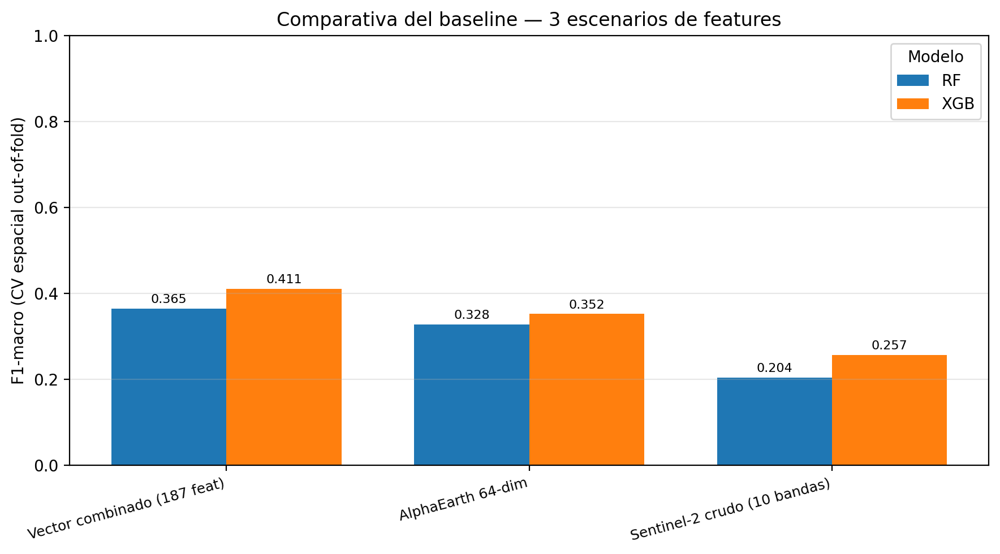
Comparativa RF vs XGBoost.
RF vs XGBoost comparison.
Interpretabilidad: SHAP
Interpretability: SHAP
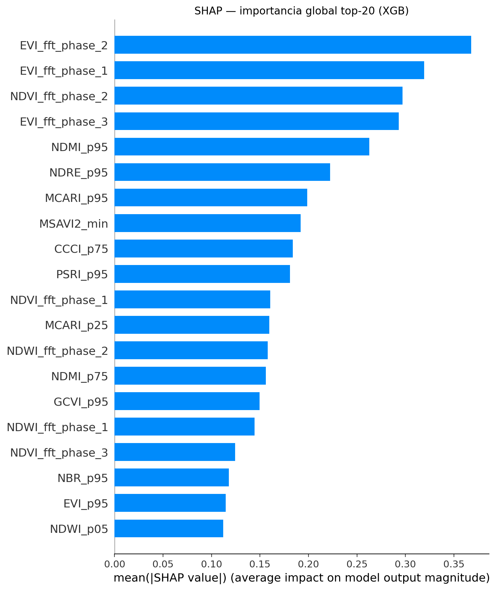
Importancia de features SHAP sobre XGBoost-AlphaEarth.
SHAP feature importance on XGBoost-AlphaEarth.
EPIC 5
EPIC 5
Las 6 arquitecturas de segmentación
The 6 segmentation architectures
| Arquitectura | Architecture |
F1 / mIoU |
Tipo | Type |
| TSViT-pheno | 0.75 / 0.6253 | Temporal | Temporal |
| TSViT-base | — / 0.622 | Temporal | Temporal |
| U-TAE | — / 0.474 | Temporal | Temporal |
| AnySat | — / 0.446 | Foundation | Foundation |
| DeepLabv3+ | — / 0.271 | Espacial | Spatial |
| U-Net | — / 0.242 | Espacial | Spatial |
| SegFormer-B0 | — / 0.232 | Espacial | Spatial |
Lectura clave de segmentación
Key segmentation takeaway
Los temporales (TSViT, U-TAE) ganan a los espaciales por amplio margen.
Temporal models (TSViT, U-TAE) beat spatial ones by a wide margin.
- Confirma que la señal es temporal, no de textura.
- Confirms the signal is temporal, not textural.
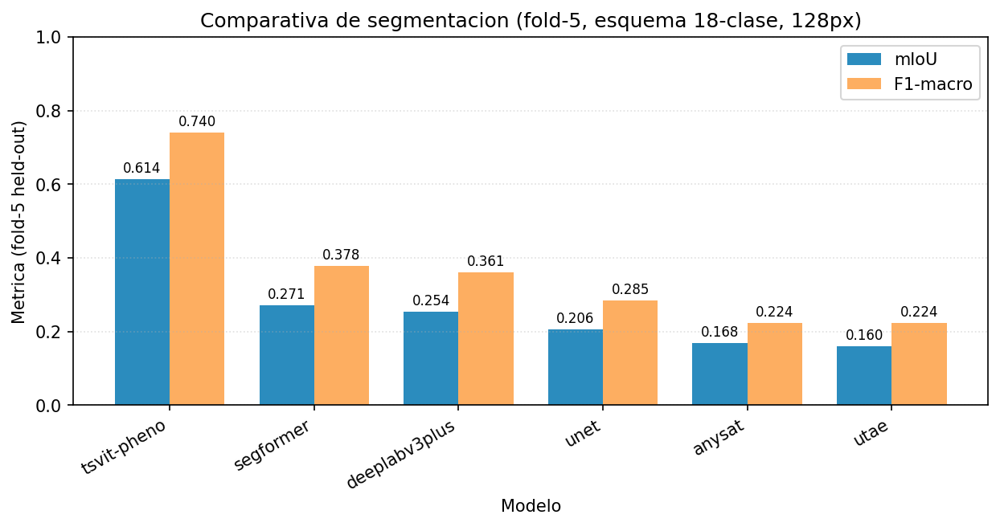
mIoU/F1 de las 6 arquitecturas.
mIoU/F1 of the 6 architectures.
TSViT, explicado
TSViT, explained
- Time-Series Vision Transformer: factoriza atención temporal y espacial.
- Time-Series Vision Transformer: factorizes temporal and spatial attention.
- Rama fenológica (TSViT-pheno): alinea cada píxel con un prototipo fenológico por clase.
- Phenology branch (TSViT-pheno): aligns each pixel with a per-class phenological prototype.
- Curva NDVI media → descripción Gemini → embedding. Método Wen et al. 2025.
- Mean NDVI curve → Gemini description → embedding. Wen et al. 2025 method.
IoU por clase del campeón TSViT
Per-class IoU of the TSViT champion
- Winter barley 0.89 · soft winter wheat 0.86 · grapevine 0.86 · meadow 0.81.
- Winter barley 0.89 · soft winter wheat 0.86 · grapevine 0.86 · meadow 0.81.
- Mixed cereal 0.24 (el peor).
- Mixed cereal 0.24 (the worst).
- Lectura: cultivos con fenología clara y soporte alto ganan.
- Takeaway: crops with clear phenology and high support win.
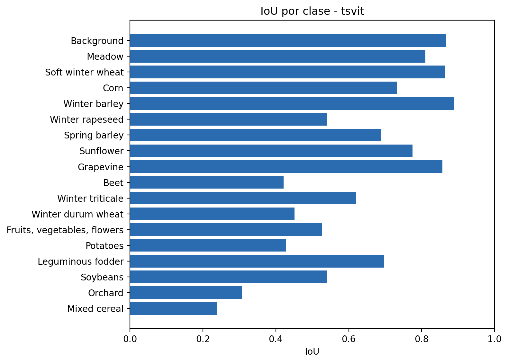
IoU por clase.
Per-class IoU.
Matriz de confusión TSViT
TSViT confusion matrix
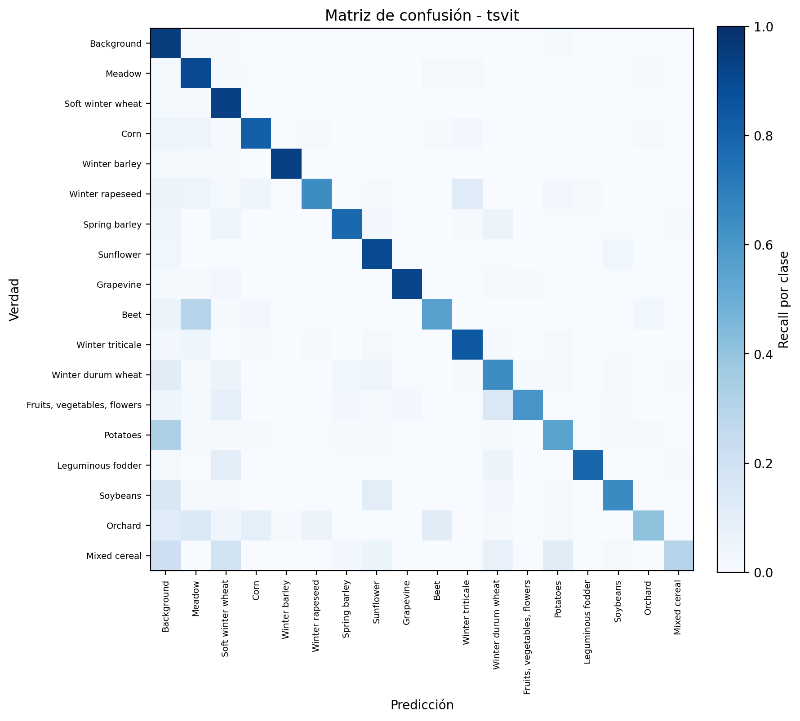
Las confusiones se concentran entre cereales de invierno hermanos.
Confusions concentrate among sibling winter cereals.
Ajuste fino con Optuna
Fine-tuning with Optuna
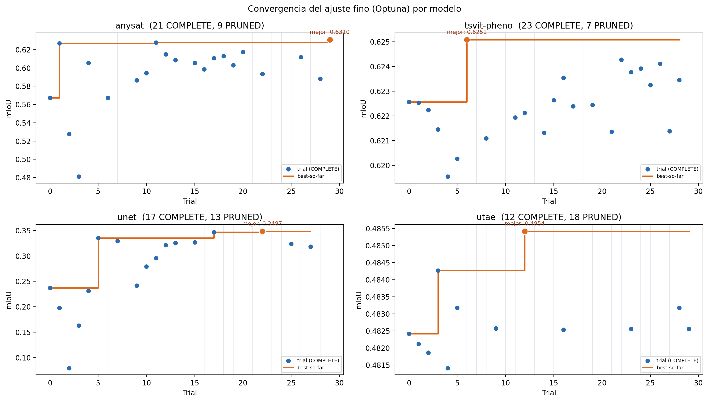
Convergencia de la búsqueda de hiperparámetros.
Hyperparameter search convergence.
EPIC 6
EPIC 6
Los 4 ensambles
The 4 ensembles
| Ensamble | Ensemble |
F1 |
Accuracy | Accuracy |
| Stacking heterogéneo (parcela) | Heterogeneous stacking (parcel) | 0.747 | 0.849 |
| Blending (Optuna) | 0.741 | — |
| TSViT-pheno (individual) | TSViT-pheno (single) | 0.625 | — |
| Voting (píxel) | Voting (pixel) | 0.623 | — |
| Bagging | 0.586 | — |
El stacking +FarSLIP alcanza F1 0.749.
Stacking +FarSLIP reaches F1 0.749.
Matriz de confusión del stacking
Stacking confusion matrix
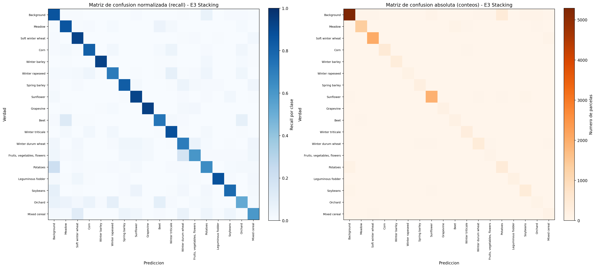
El meta-modelo arbitra entre miembros por clase.
The meta-model arbitrates between members per class.
Benchmark unificado de todos los modelos
Unified benchmark of all models
| Modelo | Model |
F1 |
Accuracy | Accuracy |
| Stacking-5 | 0.7470 | 0.849 |
| Voting-3 (DESPLEGADO) | Voting-3 (DEPLOYED) | 0.7444 | 0.863 |
| Blending | 0.7436 | — |
| TSViT-pheno | 0.7367 | mIoU 0.6253 |
| XGBoost-AlphaEarth | 0.5913 | — |
| U-TAE | 0.474 | — |
| AnySat | 0.446 | — |
| DeepLabv3+ | 0.271 | — |
| U-Net | 0.242 | — |
| SegFormer | 0.232 | — |
| FarSLIP (zero-shot) | FarSLIP (zero-shot) | 0.031 | — |
FarSLIP: complemento, no motor
FarSLIP: complement, not engine
Visión-lenguaje contrastivo, con 3 roles:
Contrastive vision-language, with 3 roles:
Miembro incremental
Incremental member
+0.002 en el stacking.
+0.002 in the stacking.
Descriptor fenológico
Phenology descriptor
Para el perceiver del agente.
For the agent perceiver.
Validación zero-shot
Zero-shot validation
3 clases visualmente separables: 0.40-0.60.
3 visually separable classes: 0.40-0.60.
4 · Modelo final
4 · Final model
Voting-3, el modelo desplegado
Voting-3, the deployed model
Simple, robusto y con árbitro implícito por clase.
Simple, robust, with an implicit per-class arbiter.
¿Por qué Voting-3 y no Stacking-5?
Why Voting-3 and not Stacking-5?
| Criterio | Criterion |
Voting-3 | Stacking-5 |
| F1 | 0.744 | 0.747 |
| Pesos convexos | Convex weights | 3 | 54 |
| Spatial-CV | 0.558 | 0.536 |
| Latencia | Latency | 0.04 s | — |
3 pesos vs 54: más simple, más robusto, mejor en CV espacial.
3 weights vs 54: simpler, more robust, better at spatial CV.
Los 3 miembros de Voting-3
The 3 members of Voting-3
TSViT-pheno
Forma temporal completa.
Full temporal shape.
U-TAE
Segunda opinión temporal decorrelacionada.
Decorrelated second temporal opinion.
XGBoost-AlphaEarth
Resumen espectral 64-dim.
64-dim spectral summary.
Curva de cardinalidad
Cardinality curve
¿Cuántas clases conviene comprometer?
How many classes should we commit to?
- 18 clases → F1 0.749 (100% parcelas).
- 18 classes → F1 0.749 (100% parcels).
- 12 clases → 0.860 (90%).
- 12 classes → 0.860 (90%).
- 9 clases → 0.912 (82%).
- 9 classes → 0.912 (82%).
- 8 clases → >0.90 (80%). El codo en K=8-9.
- 8 classes → >0.90 (80%). Elbow at K=8-9.
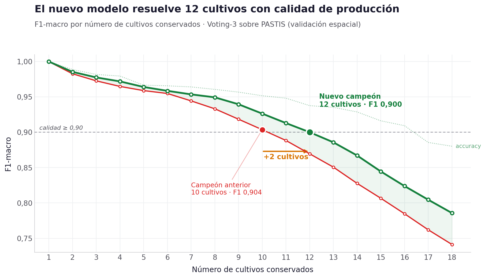
F1 vs número de clases comprometidas.
F1 vs number of committed classes.
Sin reentrenar
No retraining
- El meta produce probabilidades por clase.
- The meta produces per-class probabilities.
- El umbral de cardinalidad se aplica dinámicamente en inferencia.
- The cardinality threshold is applied dynamically at inference.
- Un mismo modelo, cuatro modos de producción.
- One model, four production modes.
4 modos de producción
4 production modes
| Modo | Mode |
Clases | Classes |
F1 |
Cobertura | Coverage |
| Full | 18 | 0.749 | 100% |
| Producción (recom.) | Production (rec.) | 12 | 0.860 | 90% |
| Alta precisión | High precision | 9 | 0.912 | 82% |
| Máxima confianza | Max confidence | 8 | >0.90 | 80% |
F1 por clase del Voting-3
Per-class F1 of Voting-3
- Prado 0.961 · maíz 0.954 · colza 0.945.
- Meadow 0.961 · maize 0.954 · rapeseed 0.945.
- Vid 0.944 · trigo blando 0.940 · cebada 0.879.
- Grapevine 0.944 · soft wheat 0.940 · barley 0.879.
- Modo france-9/10, las mejores clases.
- france-9/10 mode, the best classes.
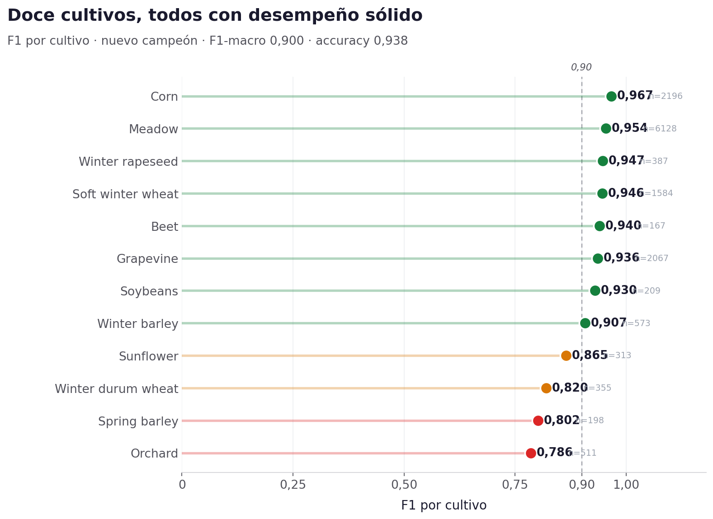
F1 por clase, Voting-3.
Per-class F1, Voting-3.
Modos france-9 / france-10
france-9 / france-10 modes
0.92
F1 france-9 (acc 0.9471, 82%)
F1 france-9 (acc 0.9471, 82%)
0.9069
F1 france-10 (acc 0.9421, 84%)
F1 france-10 (acc 0.9421, 84%)
Voting-3 gana a Stacking-5 en ambos modos.
Voting-3 beats Stacking-5 in both modes.
KPIs del modelo desplegado
Deployed model KPIs
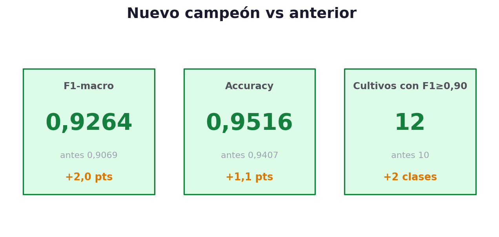
Resumen de métricas del Voting-3 en producción.
Summary of Voting-3 production metrics.
5 · Copiloto y app
5 · Copilot & app
El copiloto conversacional
The conversational copilot
Los modelos perciben; un LLM frozen razona.
The models perceive; a frozen LLM reasons.
Patrón Be My Eyes
Be My Eyes pattern
Los modelos PERCIBEN
The models PERCEIVE
Emiten observación en texto plano: cultivo, fenología, vigor, confianza.
They emit plain-text observations: crop, phenology, vigor, confidence.
El LLM frozen RAZONA
The frozen LLM REASONS
Llama herramientas y redacta. Nunca clasifica píxeles ni recibe tensores/logits.
Calls tools and writes. It never classifies pixels nor receives tensors/logits.
Toda cifra en una respuesta viene de un tool_result auditable (event stream en Postgres). Esto = resistencia a alucinaciones.
Every figure in a reply comes from an auditable tool_result (event stream in Postgres). This = hallucination resistance.
Doble backend LLM — soberanía de datos
Dual LLM backend — data sovereignty
Gemini 2.5 Pro (nube)
Gemini 2.5 Pro (cloud)
GA, contexto 1M, reasoner del copiloto.
GA, 1M context, copilot reasoner.
Qwen3.5-35B-A3B (on-prem)
Qwen3.5-35B-A3B (on-prem)
vLLM GPTQ-Int4, single-GPU.
vLLM GPTQ-Int4, single-GPU.
Backend factory sin tocar la lógica de negocio. Switch A/B.
Backend factory without touching business logic. A/B switch.
Las 10 FunctionTools geoespaciales
The 10 geospatial FunctionTools
| Tool | Función | Function |
|---|
| list_parcels | ST_Intersects |
| get_parcel_timeseries | Anclas fenológicas reales | Real phenological anchors |
| get_aoi_stats | Área geodésica + cultivo dominante | Geodesic area + dominant crop |
| search_stac | CDSE OAuth | CDSE OAuth |
| get_tiles | TiTiler XYZ | TiTiler XYZ |
| classify_new_parcel | Sirve Voting-3 (F1 0.9069) desde OOF cacheado | Serves Voting-3 (F1 0.9069) from cached OOF |
| add_aoi | Añadir AOI | Add AOI |
| compare_models | Comparar modelos | Compare models |
| explain_prediction | Descriptor fenológico (Wen 2025) | Phenology descriptor (Wen 2025) |
| retrieve_context | Spatial-RAG | Spatial-RAG |
Todas reales, validadas con Pydantic, scoped por session_id.
All real, Pydantic-validated, scoped by session_id.
Spatial-RAG
Spatial-RAG
Pre-filtro espacial
Spatial pre-filter
PostGIS ST_DWithin.
PostGIS ST_DWithin.
Búsqueda semántica
Semantic search
pgvector cosine sobre AlphaEarth 64-dim.
pgvector cosine over AlphaEarth 64-dim.
Documentos = descripciones fenológicas de parcelas vecinas. Reduce alucinaciones.
Documents = phenological descriptions of neighboring parcels. Reduces hallucinations.
Uplift del perceiver
Perceiver uplift
Re-cablear el perceiver del baseline tabular al campeón Voting-3:
Rewiring the perceiver from the tabular baseline to the Voting-3 champion:
- Accuracy 0.8308 → 0.9413 (+11 pp).
- Accuracy 0.8308 → 0.9413 (+11 pp).
- Macro-F1 0.6868 → 0.9007.
- Macro-F1 0.6868 → 0.9007.
- Sobre 13,481 parcelas reales.
- Over 13,481 real parcels.
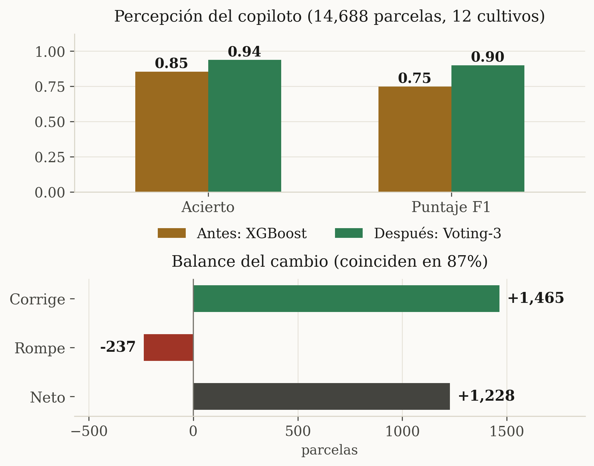
Uplift del perceiver del agente.
Agent perceiver uplift.
Arquitectura del sistema
System architecture
FastAPI
/chat SSE, /aois, /timeseries, /stac, /tiles, /llm/switch, /sessions.
/chat SSE, /aois, /timeseries, /stac, /tiles, /llm/switch, /sessions.
Nuxt 4
MapLibre GL, chat SSE, switch LLM, i18n it/es/en.
MapLibre GL, SSE chat, LLM switch, i18n it/es/en.
PostgreSQL 15
PostGIS + pgvector. Multi-tenant por RLS session_id.
PostGIS + pgvector. Multi-tenant via RLS session_id.
Frontend
Frontend
- Mapa MapLibre para dibujar AOI.
- MapLibre map to draw AOIs.
- Chat dock con streaming SSE.
- Chat dock with SSE streaming.
- Panel de actividad de tools (PlanStepper).
- Tool activity panel (PlanStepper).
- i18n trilingüe (it/es/en, 91 claves sincronizadas).
- Trilingual i18n (it/es/en, 91 synchronized keys).
Seguridad
Security
- RLS por session_id (rol NOBYPASSRLS).
- RLS per session_id (NOBYPASSRLS role).
- Tools scoped; Pydantic bloquea args fuera de rango.
- Scoped tools; Pydantic blocks out-of-range args.
- Event stream auditable.
- Auditable event stream.
- Prompt injection → tools scoped.
- Prompt injection → scoped tools.
- RAG poisoning → corpus controlado.
- RAG poisoning → controlled corpus.
- Sobre-confianza → warning si confianza <0.60.
- Over-confidence → warning if confidence <0.60.
App honesta
Honest app
Degrada explícitamente en vez de fabricar datos:
It degrades explicitly instead of fabricating data:
- Timeseries: solo anclas reales.
- Timeseries: real anchors only.
- STAC: vacío si pgstac no está desplegado.
- STAC: empty if pgstac is not deployed.
- Jobs Pub/Sub: NotImplementedError explícito.
- Pub/Sub jobs: explicit NotImplementedError.
6 · Transfer, MLOps y futuro
6 · Transfer, MLOps & future
¿Se extiende a otras regiones?
Does it extend to other regions?
Una respuesta honesta, con resultados positivos y negativos.
An honest answer, with positive and negative results.
Transferibilidad multi-región
Multi-region transferability
Francia → Cataluña
France → Catalonia
Zero-shot mIoU 0.0000; few-shot 0.2468. Gap franco-ibérico catastrófico en zero-shot.
Zero-shot mIoU 0.0000; few-shot 0.2468. Catastrophic Franco-Iberian gap at zero-shot.
EuroCropsML (LV → EE)
EuroCropsML (LV → EE)
AlphaEarth gana a Sentinel-2 a cada k; +0.111 F1 en k=1.
AlphaEarth beats Sentinel-2 at every k; +0.111 F1 at k=1.
Trópico (Brasil)
Tropics (Brazil)
WorldCereal: zero-shot maíz 0.0095; few-shot 0.626 en k=20.
WorldCereal: zero-shot maize 0.0095; few-shot 0.626 at k=20.
El FM cierra el gap con menos etiquetas
The FM closes the gap with fewer labels
- AlphaEarth supera a Sentinel-2 crudo a cada k.
- AlphaEarth beats raw Sentinel-2 at every k.
- Cierra el gap con ~10x menos etiquetas.
- Closes the gap with ~10x fewer labels.
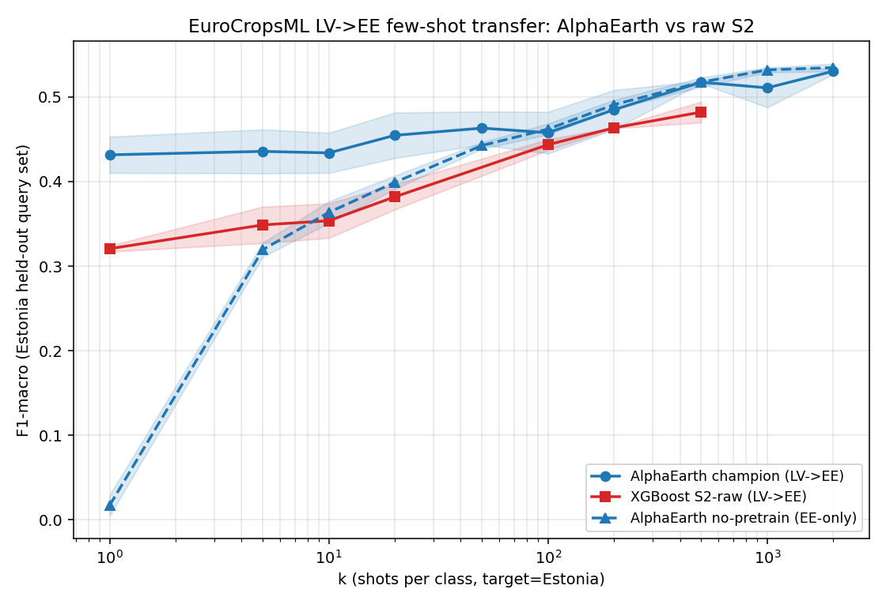
AlphaEarth vs Sentinel-2 en few-shot.
AlphaEarth vs Sentinel-2 in few-shot.
Delta pareado multi-región
Multi-region paired delta
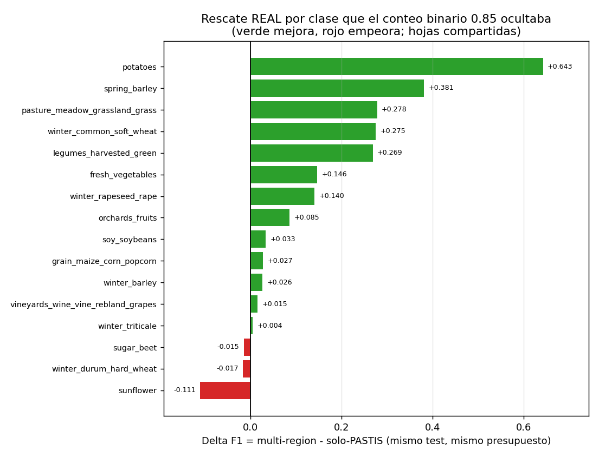
Delta pareado por región.
Paired delta per region.
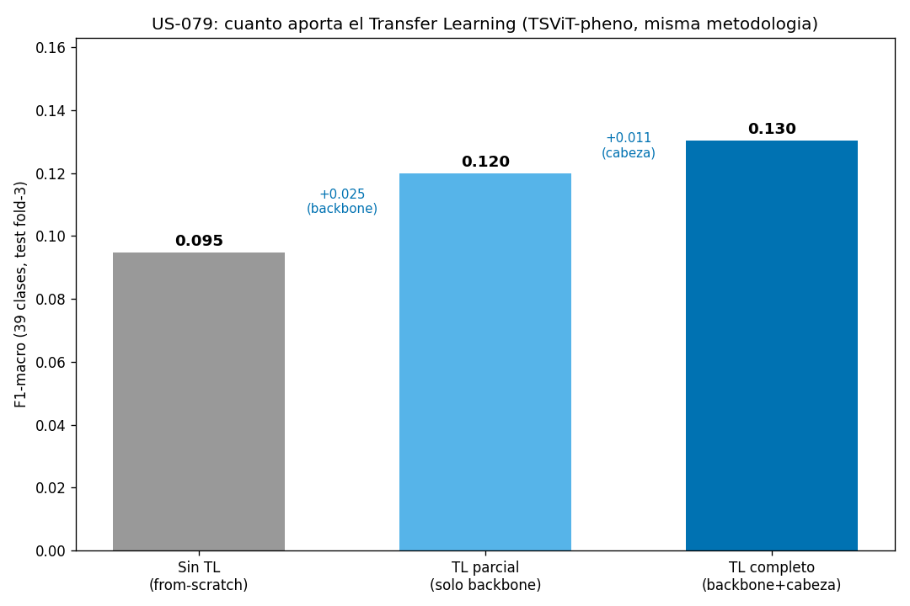
Niveles de transferibilidad.
Transferability levels.
Resultado negativo honesto
An honest negative result
El modelo multi-región único: ampliar la taxonomía 18 → 30 hojas SIN inventar mapeos…
The single multi-region model: expanding the taxonomy 18 → 30 leaves WITHOUT inventing mappings…
…rescata 0 clases sobre F1 0.85. El cuello de botella es la separabilidad fenológica en un embedding anual, no el número de regiones.
…rescues 0 classes above F1 0.85. The bottleneck is phenological separability in an annual embedding, not the number of regions.
Italia (US-078/079)
Italy (US-078/079)
- Dataset PASTIS-homólogo construido. Voting-3 fine F1 0.133.
- PASTIS-homologous dataset built. Voting-3 fine F1 0.133.
- Warm-start por cultivo ayuda a durum/cebada/vid/maíz; estorba a girasol/trigo blando.
- Per-crop warm-start helps durum/barley/grapevine/maize; hurts sunflower/soft wheat.
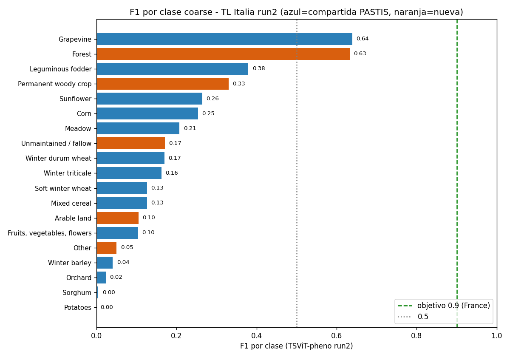
F1 de transferencia a Italia.
Transfer F1 to Italy.
DE4 Baja Sajonia (US-082)
DE4 Lower Saxony (US-082)
La región donde el transfer SÍ funciona. 3 palancas medidas:
The region where transfer DOES work. 3 measured levers:
| Palanca | Lever | Efecto | Effect |
|---|
| Año 2023 vs 2018 | Year 2023 vs 2018 | XGB +44% (0.156 → 0.225) | XGB +44% (0.156 → 0.225) |
| Ventana 14 vs 8 meses | Window 14 vs 8 months | 24 → 56 fechas | 24 → 56 dates |
| Región DE4 vs Toscana | Region DE4 vs Tuscany | Voting-3 0.119 → 0.266 (2.2x) | Voting-3 0.119 → 0.266 (2.2x) |
DE4 — cereales rescatados
DE4 — rescued cereals
- Maíz 0.703 · colza 0.689 · trigo de invierno 0.674 · centeno 0.573.
- Maize 0.703 · rapeseed 0.689 · winter wheat 0.674 · rye 0.573.
- 8 clases ≥0.6 vs 1 en Toscana.
- 8 classes ≥0.6 vs 1 in Tuscany.
Las 3 vías: A conservar clases nativas (0.266) · B crosswalk sin conservar (0.287) · C procedimiento completo.
The 3 routes: A keep native classes (0.266) · B crosswalk without keeping (0.287) · C full procedure.
Parcelas grandes (10 ha vs 0.4) + cobertura completa + ventana de invierno = separabilidad.
Large parcels (10 ha vs 0.4) + full coverage + winter window = separability.
MLOps reproducible
Reproducible MLOps
DVC
Datasets y pesos versionados.
Versioned datasets and weights.
MLflow
Tags data_version + code_version.
Tags data_version + code_version.
Dagster
Pipelines asset-oriented.
Asset-oriented pipelines.
dbmate
Migraciones reversibles.
Reversible migrations.
100%
reproducible.
reproducible.
H100 — presupuesto y uso
H100 — budget and usage
80 h
en ventanas
in windows
$262-602
entrenamiento único
one-time training
$115/mes
operativo scale-to-zero
operational scale-to-zero
- La H100 (95 GB VRAM) entrenó TSViT-pheno-fullm (dim 192).
- The H100 (95 GB VRAM) trained TSViT-pheno-fullm (dim 192).
- Permitió 2+ entrenamientos densos en paralelo; sirve Qwen on-prem.
- Enabled 2+ dense trainings in parallel; serves Qwen on-prem.
Arquitectura "harness" del proyecto
Project "harness" architecture
Orquestación
Orchestration
Orquestador único (CLAUDE.md/AGENTS.md espejos), 30 skills agrosat-*, 9 subagentes, guías por directorio on-demand, auto-memoria persistente.
Single orchestrator (mirror CLAUDE.md/AGENTS.md), 30 agrosat-* skills, 9 sub-agents, on-demand per-directory guides, persistent auto-memory.
Buenas prácticas
Best practices
Código en inglés, prosa en español, sin emojis, structlog, type hints, DRY, SoC, multi-tenant, i18n, secrets en Secret Manager, DVC, migraciones solo dbmate.
English code, Spanish prose, no emojis, structlog, type hints, DRY, SoC, multi-tenant, i18n, secrets in Secret Manager, DVC, dbmate-only migrations.
Buenas prácticas seguidas
Best practices followed
- Spatial CV anti-fuga.
- Anti-leakage spatial CV.
- Datos 100% reales (cero placeholders en producción).
- 100% real data (zero placeholders in production).
- Notebooks ejecutados end-to-end con outputs.
- Notebooks run end-to-end with outputs.
- make check (lint + secrets + i18n) antes de PR; cobertura ≥70% backend.
- make check (lint + secrets + i18n) before PR; ≥70% backend coverage.
Aprendizajes
Lessons learned
- La señal temporal supera a la espacial.
- The temporal signal beats the spatial one.
- Los foundation models pagan el few-shot, pero no dan magia en zero-shot.
- Foundation models pay off in few-shot, but give no zero-shot magic.
- La cardinalidad gobierna la fragilidad del transfer más que la región.
- Cardinality governs transfer fragility more than the region.
- Un ensamble simple (3 pesos) puede ganar a uno complejo (54) en robustez.
- A simple ensemble (3 weights) can beat a complex one (54) in robustness.
- La honestidad métrica (reportar el negativo del multi-región) es contribución.
- Metric honesty (reporting the multi-region negative) is a contribution.
Trabajo futuro
Future work
- Features temporales intra-anuales para separar cereales hermanos.
- Intra-annual temporal features to separate sibling cereals.
- OOF 5-fold para un número inatacable.
- 5-fold OOF for an unassailable number.
- Cablear el switch A/B al backend.
- Wire the A/B switch to the backend.
- pgstac desplegado.
- pgstac deployed.
- Spatial-RAG full (e5-mistral + HNSW).
- Full Spatial-RAG (e5-mistral + HNSW).
- Auth Clerk; worker Pub/Sub async.
- Clerk auth; async Pub/Sub worker.
- AgroMind-IT/ES con DOI Zenodo.
- AgroMind-IT/ES with Zenodo DOI.
- Paper a un venue.
- Paper to a venue.
Agradecimientos
Acknowledgments
- Dr. Gerardo Jesús Camacho — sponsor académico.
- Dr. Gerardo Jesús Camacho — academic sponsor.
- Equipo AgroSatCopilot.
- The AgroSatCopilot team.
- Datasets abiertos: AlphaEarth/DeepMind, Copernicus, JRC EuroCrops.
- Open datasets: AlphaEarth/DeepMind, Copernicus, JRC EuroCrops.
- La comunidad open-source.
- The open-source community.
Gracias
Thank you
AgroSatCopilot — análisis satelital agrícola conversacional, honesto y reproducible.
AgroSatCopilot — conversational, honest and reproducible agricultural satellite analysis.
Gracias
Thank you
AgroSatCopilot · Equipo 17 · open-source (Apache 2.0 / MIT)
AgroSatCopilot · Team 17 · open-source (Apache 2.0 / MIT)
Datos: AlphaEarth (CC-BY-4.0), Copernicus Sentinel, PASTIS-R, EuroCrops, Sen4AgriNet, EuroCropsML, WorldCereal. Modelos: TSViT, U-TAE, FarSLIP, Gemini 2.5 Pro, Qwen3.5.
Data: AlphaEarth (CC-BY-4.0), Copernicus Sentinel, PASTIS-R, EuroCrops, Sen4AgriNet, EuroCropsML, WorldCereal. Models: TSViT, U-TAE, FarSLIP, Gemini 2.5 Pro, Qwen3.5.